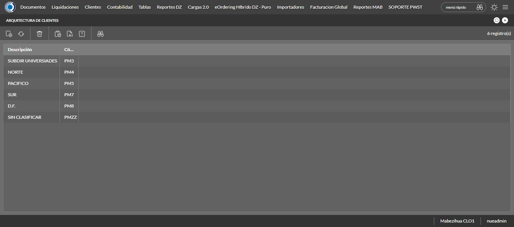
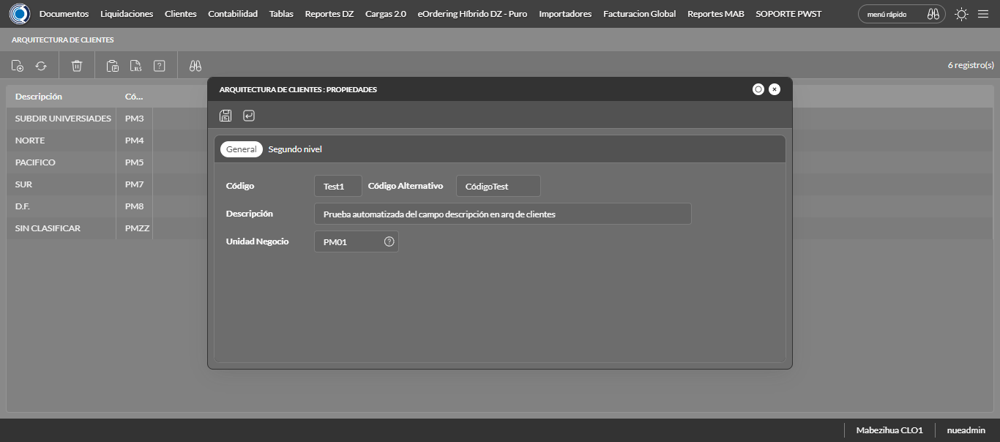
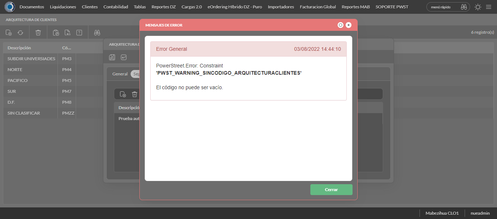

Desarrollado por : Area de Testing PWST
Fecha y hora de inicio : 2022-08-03 12:42:00
Duracion : 0:02:17.797659
Resultado : Total 8，Correctos 5 ，Errores 3 ，Taza de resultado 62.50%
Resumen 62.50% Errores 3 Fallidos 0 Correctos 5 Test realizados 8
| Caso de Prueba | Total | Correctos | Fallido | Error | Detalles | Captura del error |
| ArqCliente.Test: Escenario 1 de Arquitectura Cliente | 8 | 5 | 0 | 3 | Detalles | |
test |
pt1_1: 2022-08-03 12:42:02,091 - root - INFO - Se abre el chrome
2022-08-03 12:42:05,562 - root - INFO - Entra a la URL
2022-08-03 12:42:05,679 - root - INFO - Maximiza la pantalla
2022-08-03 12:42:08,721 - root - INFO - Cambia al frame
|
|
||||
test_000: Ingresa a la base de datos |
pt1_2: 2022-08-03 12:42:11,821 - root - INFO - Escribe el usuario
2022-08-03 12:42:11,895 - root - INFO - Escribe la contraseña
2022-08-03 12:42:11,999 - root - INFO - Se dio clic en el boton ingresar
2022-08-03 12:42:15,539 - root - INFO - Ejecutar Enterprise
2022-08-03 12:42:19,585 - root - INFO - Cambia entre pestañas
|
|
||||
test_001: Abre menu y ejecuta pantalla |
pt1_3: 2022-08-03 12:42:40,102 - root - INFO - Abre el menu completo
2022-08-03 12:42:48,734 - root - INFO - Abre la pantalla de Arquitectura de CLiente
2022-08-03 12:42:48,734 - root - INFO - Captura: C:\xampp\htdocs\versiones\automatizaciones\AutoPWST\01ARC\report\img screen：20220803_12_42_48.png
2022-08-03 12:42:48,873 - root - INFO - La pantalla ejecutada es Tipos de Cliente
2022-08-03 12:42:48,943 - root - INFO - Se presiona el boton 'Nuevo', para crear un nuevo registro.
|
 | ||||
test_002: Abre la ventana de nuevo y crear un registro |
pt1_4: 2022-08-03 12:42:51,994 - root - INFO - Se abrio la pantalla para el ingreso de un registro nuevo.
2022-08-03 12:42:52,035 - root - INFO - El campo 'Codigo' si se encuentra visible.
2022-08-03 12:42:52,064 - root - INFO - El campo 'Codigo Alternativo' si se encuentra visible.
2022-08-03 12:42:52,111 - root - INFO - El campo 'Descrición' si se encuentra visible.
2022-08-03 12:42:52,158 - root - INFO - El campo 'Unidad de Negocio' si se encuentra visible.
2022-08-03 12:42:52,212 - root - INFO - Ingresa el codigo del nuevo registro
2022-08-03 12:42:55,307 - root - INFO - Ingresa el codigo alternativo del nuevo registro
2022-08-03 12:42:58,431 - root - INFO - Ingresa la descripción del nuevo registro
2022-08-03 12:43:07,862 - root - INFO - Captura: C:\xampp\htdocs\versiones\automatizaciones\AutoPWST\01ARC\report\img screen：20220803_12_43_07.png
2022-08-03 12:43:08,023 - root - INFO - Se hace el cambio de pestaña para continuar con el registro nuevo
2022-08-03 12:43:11,116 - root - INFO - Se presiona el boton de segundo nivel 'Nuevo', para crear un nuevo registro.
2022-08-03 12:43:14,160 - root - INFO - El campo 'Codigo de segundo nivel' si se encuentra visible.
2022-08-03 12:43:14,207 - root - INFO - El campo 'Codigo Alternativo de segundo nivel' si se encuentra visible.
2022-08-03 12:43:14,254 - root - INFO - El campo 'Descrición de segundo nivel' si se encuentra visible.
2022-08-03 12:43:16,333 - root - INFO - Ingresa el codigo del nuevo registro en segundo nivel
2022-08-03 12:43:19,426 - root - INFO - Ingresa el codigo alternativo del nuevo registro en segundo nivel
2022-08-03 12:43:22,564 - root - INFO - Ingresa la descripción del nuevo registro del segundo nivel
2022-08-03 12:43:25,660 - root - INFO - Se hace el cambio de pestaña para continuar con el registro nuevo
2022-08-03 12:43:28,749 - root - INFO - Se presiona el boton 'Nuevo' de tercer nivel, para crear un nuevo registro.
2022-08-03 12:43:31,794 - root - INFO - El campo 'Codigo de tercer nivel' si se encuentra visible.
2022-08-03 12:43:31,841 - root - INFO - El campo 'Codigo Alternativo de tercer nivel' si se encuentra visible.
2022-08-03 12:43:31,873 - root - INFO - El campo 'Descrición de tercer nivel' si se encuentra visible.
2022-08-03 12:43:33,947 - root - INFO - Ingresa el codigo del nuevo registro en tercer nivel
2022-08-03 12:43:37,041 - root - INFO - Ingresa el codigo alternativo del nuevo registro en tercer nivel
2022-08-03 12:43:40,163 - root - INFO - Ingresa la descripción del nuevo registro del tercer nivel
2022-08-03 12:43:43,251 - root - INFO - Se hace el cambio de pestaña para continuar con el registro nuevo
2022-08-03 12:43:46,337 - root - INFO - Se presiona el boton 'Nuevo' de cuarto nivel, para crear un nuevo registro.
2022-08-03 12:43:49,394 - root - INFO - El campo 'Codigo de cuarto nivel' si se encuentra visible.
2022-08-03 12:43:49,428 - root - INFO - El campo 'Codigo Alternativo de cuarto nivel' si se encuentra visible.
2022-08-03 12:43:49,460 - root - INFO - El campo 'Descrición de cuarto nivel' si se encuentra visible.
2022-08-03 12:43:51,535 - root - INFO - Ingresa el codigo del nuevo registro en cuarto nivel
2022-08-03 12:43:54,642 - root - INFO - Ingresa el codigo alternativo del nuevo registro en cuarto nivel
2022-08-03 12:43:57,751 - root - INFO - Ingresa la descripción del nuevo registro del cuarto nivel
2022-08-03 12:44:00,840 - root - INFO - Se da clic en el boton Guardar de cuarto nivel; se debe crear un nuevo registro.
2022-08-03 12:44:03,923 - root - INFO - Se da clic en el boton Guardar de tercer nivel; se debe crear un nuevo registro.
2022-08-03 12:44:07,011 - root - INFO - Se da clic en el boton Guardar de segundo nivel; se debe crear un nuevo registro.
2022-08-03 12:44:10,104 - root - INFO - Se da clic en el boton Guardar; se debe crear un nuevo registro.
|
 | ||||
test_003: Repetir el registro creado anteriormente |
ft1_5: 2022-08-03 12:44:14,180 - root - ERROR - No se encontró el botón Refrescar, revise si el xpath sigue siendo el mismo, para mas detalles del error consulte el reporte
2022-08-03 12:44:14,185 - root - INFO - Captura: C:\xampp\htdocs\versiones\automatizaciones\AutoPWST\01ARC\report\img screen：20220803_12_44_14.png
Traceback (most recent call last):
File "C:\xampp\htdocs\versiones\automatizaciones\AutoPWST\01ARC\testCase\ArqCliente.py", line 48, in test_003
return repetirregistro.repetirregistro(self)
File "C:\xampp\htdocs\versiones\automatizaciones\AutoPWST\01ARC\testCase\repetirregistro.py", line 23, in repetirregistro
Refresca.click()
File "C:\Users\PWST\AppData\Local\Programs\Python\Python310\lib\site-packages\selenium\webdriver\remote\webelement.py", line 89, in click
self._execute(Command.CLICK_ELEMENT)
File "C:\Users\PWST\AppData\Local\Programs\Python\Python310\lib\site-packages\selenium\webdriver\remote\webelement.py", line 773, in _execute
return self._parent.execute(command, params)
File "C:\Users\PWST\AppData\Local\Programs\Python\Python310\lib\site-packages\selenium\webdriver\remote\webdriver.py", line 430, in execute
self.error_handler.check_response(response)
File "C:\Users\PWST\AppData\Local\Programs\Python\Python310\lib\site-packages\selenium\webdriver\remote\errorhandler.py", line 247, in check_response
raise exception_class(message, screen, stacktrace)
selenium.common.exceptions.ElementClickInterceptedException: Message: element click intercepted: Element <div tabindex="12" id="_6DEE09FD803F48798C72FD4845E6290F__refresh_element" name="_6DEE09FD803F48798C72FD4845E6290F__refresh_element">...</div> is not clickable at point (56, 88). Other element would receive the click: <div class="ui-modal-container">...</div>
(Session info: chrome=104.0.5112.81)
Stacktrace:
Backtrace:
Ordinal0 [0x00358823+2197539]
Ordinal0 [0x002F0911+1771793]
Ordinal0 [0x00203FE8+802792]
Ordinal0 [0x00238AF7+1018615]
Ordinal0 [0x00236AA8+1010344]
Ordinal0 [0x0023479B+1001371]
Ordinal0 [0x00233509+996617]
Ordinal0 [0x00229093+954515]
Ordinal0 [0x0024D65C+1103452]
Ordinal0 [0x00228A74+952948]
Ordinal0 [0x0024D874+1103988]
Ordinal0 [0x0025DA72+1170034]
Ordinal0 [0x0024D476+1102966]
Ordinal0 [0x00227660+947808]
Ordinal0 [0x00228556+951638]
GetHandleVerifier [0x00601A32+2740578]
GetHandleVerifier [0x005F3776+2682534]
GetHandleVerifier [0x003E307A+518058]
GetHandleVerifier [0x003E2196+514246]
Ordinal0 [0x002F7ADB+1800923]
Ordinal0 [0x002FC2E8+1819368]
Ordinal0 [0x002FC3D5+1819605]
Ordinal0 [0x00305810+1857552]
BaseThreadInitThunk [0x75856739+25]
RtlGetFullPathName_UEx [0x775A8FEF+1215]
RtlGetFullPathName_UEx [0x775A8FBD+1165]
|
 | ||||
test_004: Modificar el registro |
ft1_6: 2022-08-03 12:44:15,336 - root - ERROR - No se encontró el botón Refrescar, revise si el xpath sigue siendo el mismo, para mas detalles del error consulte el reporte
2022-08-03 12:44:15,342 - root - INFO - Captura: C:\xampp\htdocs\versiones\automatizaciones\AutoPWST\01ARC\report\img screen：20220803_12_44_15.png
Traceback (most recent call last):
File "C:\xampp\htdocs\versiones\automatizaciones\AutoPWST\01ARC\testCase\ArqCliente.py", line 52, in test_004
return modificarregistro.modificarregistro(self)
File "C:\xampp\htdocs\versiones\automatizaciones\AutoPWST\01ARC\testCase\modificarregistro.py", line 23, in modificarregistro
Refresca2.click()
File "C:\Users\PWST\AppData\Local\Programs\Python\Python310\lib\site-packages\selenium\webdriver\remote\webelement.py", line 89, in click
self._execute(Command.CLICK_ELEMENT)
File "C:\Users\PWST\AppData\Local\Programs\Python\Python310\lib\site-packages\selenium\webdriver\remote\webelement.py", line 773, in _execute
return self._parent.execute(command, params)
File "C:\Users\PWST\AppData\Local\Programs\Python\Python310\lib\site-packages\selenium\webdriver\remote\webdriver.py", line 430, in execute
self.error_handler.check_response(response)
File "C:\Users\PWST\AppData\Local\Programs\Python\Python310\lib\site-packages\selenium\webdriver\remote\errorhandler.py", line 247, in check_response
raise exception_class(message, screen, stacktrace)
selenium.common.exceptions.ElementClickInterceptedException: Message: element click intercepted: Element <div tabindex="12" id="_6DEE09FD803F48798C72FD4845E6290F__refresh_element" name="_6DEE09FD803F48798C72FD4845E6290F__refresh_element">...</div> is not clickable at point (56, 88). Other element would receive the click: <div class="ui-modal-container">...</div>
(Session info: chrome=104.0.5112.81)
Stacktrace:
Backtrace:
Ordinal0 [0x00358823+2197539]
Ordinal0 [0x002F0911+1771793]
Ordinal0 [0x00203FE8+802792]
Ordinal0 [0x00238AF7+1018615]
Ordinal0 [0x00236AA8+1010344]
Ordinal0 [0x0023479B+1001371]
Ordinal0 [0x00233509+996617]
Ordinal0 [0x00229093+954515]
Ordinal0 [0x0024D65C+1103452]
Ordinal0 [0x00228A74+952948]
Ordinal0 [0x0024D874+1103988]
Ordinal0 [0x0025DA72+1170034]
Ordinal0 [0x0024D476+1102966]
Ordinal0 [0x00227660+947808]
Ordinal0 [0x00228556+951638]
GetHandleVerifier [0x00601A32+2740578]
GetHandleVerifier [0x005F3776+2682534]
GetHandleVerifier [0x003E307A+518058]
GetHandleVerifier [0x003E2196+514246]
Ordinal0 [0x002F7ADB+1800923]
Ordinal0 [0x002FC2E8+1819368]
Ordinal0 [0x002FC3D5+1819605]
Ordinal0 [0x00305810+1857552]
BaseThreadInitThunk [0x75856739+25]
RtlGetFullPathName_UEx [0x775A8FEF+1215]
RtlGetFullPathName_UEx [0x775A8FBD+1165]
|

|
||||
test_005: Eliminar el registro creado |
ft1_7: 2022-08-03 12:44:16,494 - root - ERROR - No se encontró el botón Refrescar, revise si el xpath sigue siendo el mismo, para mas detalles del error consulte el reporte
2022-08-03 12:44:16,500 - root - INFO - Captura: C:\xampp\htdocs\versiones\automatizaciones\AutoPWST\01ARC\report\img screen：20220803_12_44_16.png
Traceback (most recent call last):
File "C:\xampp\htdocs\versiones\automatizaciones\AutoPWST\01ARC\testCase\ArqCliente.py", line 56, in test_005
return eliminarregistro.eliminarregistro(self)
File "C:\xampp\htdocs\versiones\automatizaciones\AutoPWST\01ARC\testCase\eliminarregistro.py", line 22, in eliminarregistro
Refresca3.click()
File "C:\Users\PWST\AppData\Local\Programs\Python\Python310\lib\site-packages\selenium\webdriver\remote\webelement.py", line 89, in click
self._execute(Command.CLICK_ELEMENT)
File "C:\Users\PWST\AppData\Local\Programs\Python\Python310\lib\site-packages\selenium\webdriver\remote\webelement.py", line 773, in _execute
return self._parent.execute(command, params)
File "C:\Users\PWST\AppData\Local\Programs\Python\Python310\lib\site-packages\selenium\webdriver\remote\webdriver.py", line 430, in execute
self.error_handler.check_response(response)
File "C:\Users\PWST\AppData\Local\Programs\Python\Python310\lib\site-packages\selenium\webdriver\remote\errorhandler.py", line 247, in check_response
raise exception_class(message, screen, stacktrace)
selenium.common.exceptions.ElementClickInterceptedException: Message: element click intercepted: Element <div tabindex="12" id="_6DEE09FD803F48798C72FD4845E6290F__refresh_element" name="_6DEE09FD803F48798C72FD4845E6290F__refresh_element">...</div> is not clickable at point (56, 88). Other element would receive the click: <div class="ui-modal-container">...</div>
(Session info: chrome=104.0.5112.81)
Stacktrace:
Backtrace:
Ordinal0 [0x00358823+2197539]
Ordinal0 [0x002F0911+1771793]
Ordinal0 [0x00203FE8+802792]
Ordinal0 [0x00238AF7+1018615]
Ordinal0 [0x00236AA8+1010344]
Ordinal0 [0x0023479B+1001371]
Ordinal0 [0x00233509+996617]
Ordinal0 [0x00229093+954515]
Ordinal0 [0x0024D65C+1103452]
Ordinal0 [0x00228A74+952948]
Ordinal0 [0x0024D874+1103988]
Ordinal0 [0x0025DA72+1170034]
Ordinal0 [0x0024D476+1102966]
Ordinal0 [0x00227660+947808]
Ordinal0 [0x00228556+951638]
GetHandleVerifier [0x00601A32+2740578]
GetHandleVerifier [0x005F3776+2682534]
GetHandleVerifier [0x003E307A+518058]
GetHandleVerifier [0x003E2196+514246]
Ordinal0 [0x002F7ADB+1800923]
Ordinal0 [0x002FC2E8+1819368]
Ordinal0 [0x002FC3D5+1819605]
Ordinal0 [0x00305810+1857552]
BaseThreadInitThunk [0x75856739+25]
RtlGetFullPathName_UEx [0x775A8FEF+1215]
RtlGetFullPathName_UEx [0x775A8FBD+1165]
|
|||||
test_006: Cerrar_Navegador |
pt1_8: 2022-08-03 12:44:18,720 - root - INFO - Se cierra chrome
|
|
||||
| Caso de prueba | 8 | 5 | 0 | 3 | Taza de resultado：62.50% | |